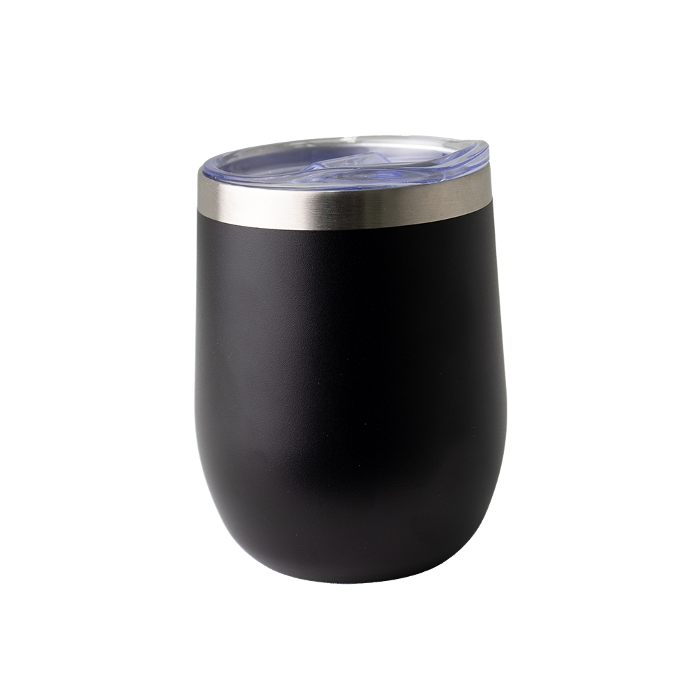

Copo Térmico Inox 320ML CO165L2


Pré-visualização da sua logomarca aplicada!
- Personalização monocromática (simulada em escala de cinza)
- Área central do copo conforme especificação
- Para alteração, troque os arquivos logo-delta.png e copo.jpg